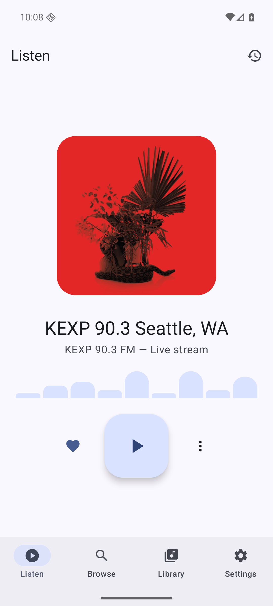
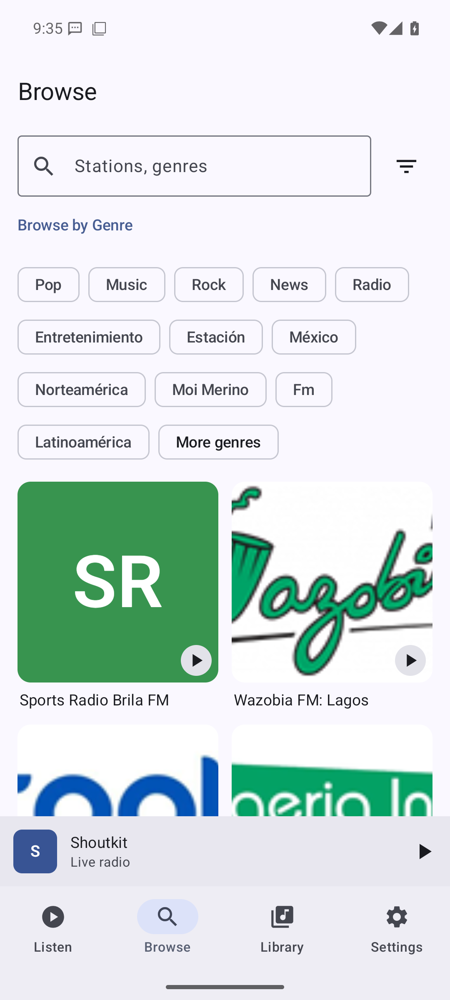
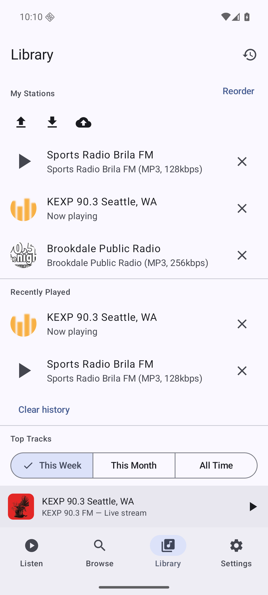

One tap, then carry on.
Keep listening in the background, with playback controls on your notification and lock screen.
Local voices. Faraway sounds. Your next favorite station. Explore internet radio with a free, open-source player made for Android.
FOSS build · Android 7.0+ · MIT licensed

A familiar Android experience for an endlessly interesting medium. Start exploring, build your library, and settle into a good broadcast.


Actual app screens captured on an Android emulator. Content and appearance can vary.
Keep listening in the background, with playback controls on your notification and lock screen.
Set a sleep timer for 15, 30, 60, or 90 minutes. Adjust the sound with built-in equalizer presets.
Reach a station from your home screen, widget, or Quick Settings. Use playback links in your own routines.
This is the FOSS edition of Shoutkit: no Google dependencies, Firebase analytics, or Crashlytics. Preferences and saved stations stay on your device.
Explore the source ↗Get the Android APK from GitHub Releases. Nightly builds are development versions; check the release notes before installing.
View releases ↗Yes. The source is available under the MIT license, and the FOSS build excludes Google and proprietary dependencies.
Chromecast and the Google Wearable Data Layer belong to the Play flavor. They are excluded from the FOSS build advertised here.
Yes. Live streams need a network connection and can use mobile data. Use Wi-Fi when you want to avoid your mobile data allowance.
Station discovery and listening connect to directory services and broadcasters. Optional album artwork lookup sends the current artist and track title to Apple's iTunes Search. See the privacy page for details.